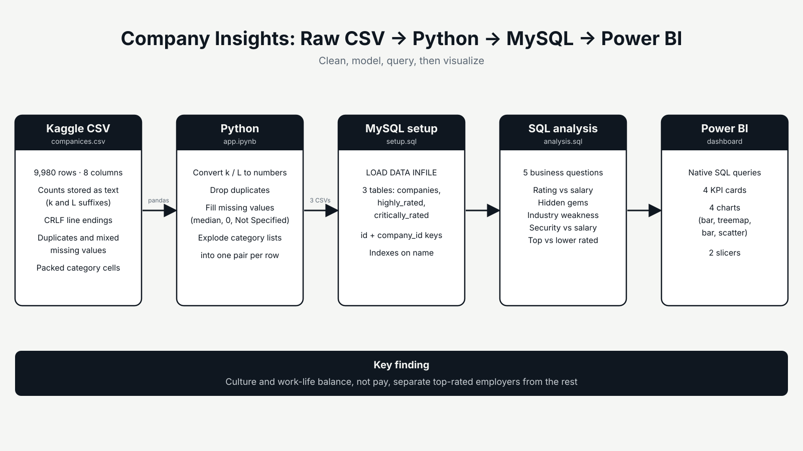
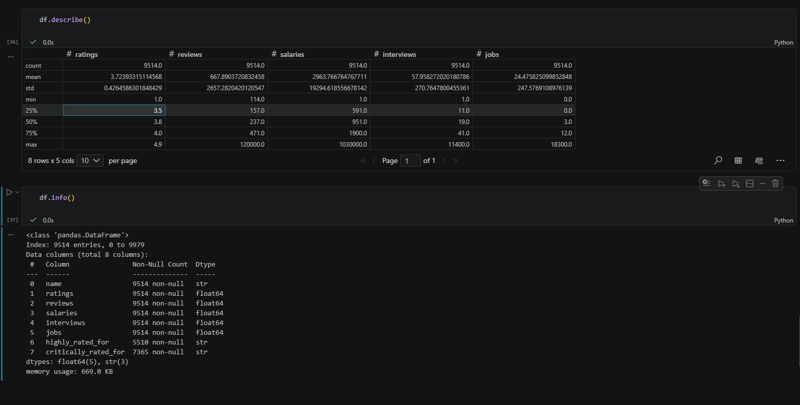
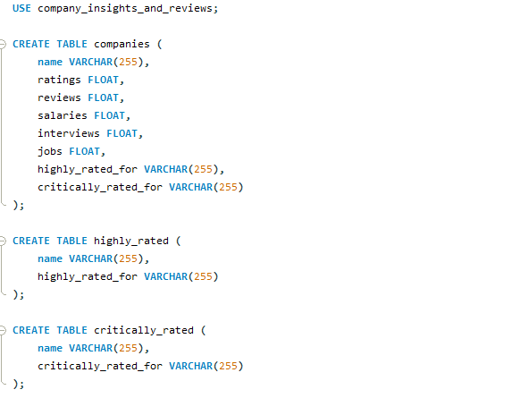
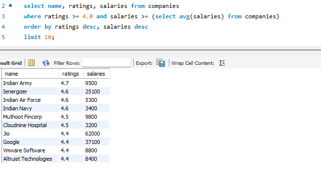
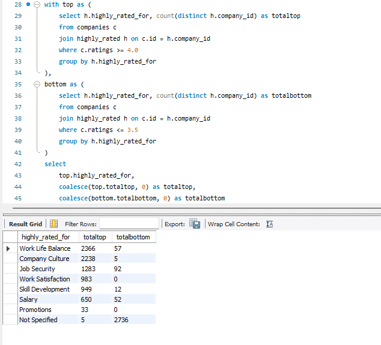

Overview
Culture, not pay, separates top employers from the rest.
The project takes a raw, public dataset of company reviews and turns it into business-relevant findings. The work spans three stages: cleaning and restructuring the data in Python, modeling and querying it in MySQL, and visualizing the results in an interactive Power BI dashboard titled "Decoding Employee Satisfaction: Ratings, Pay and What Really Matters."
Problem & goals
The source is a Kaggle file, companices.csv, with 9,980 rows and 8 columns: company name, rating, review, salary, interview and job counts, and two free-text fields listing what employees most often praised and criticized. It had Windows (CRLF) line endings, duplicate rows, numeric counts stored as text with Indian-system suffixes ("k" for thousand, "L" for lakh), inconsistent missing values ("N/A", "--", blanks), and multiple categories packed into single cells.
- Make the data trustworthy. Convert text counts to numbers, remove duplicates, and handle missing values deliberately for each column.
- Normalize the categories. Split the packed praise and criticism fields into long-format tables that can be counted and grouped.
- Answer five business questions. Use SQL to surface findings, then present them in a dashboard.
Approach
Step one: Clean in Python
Column names were standardized and the "k"/"L" values converted to real numbers, with "N/A", "--" and blanks treated as missing. Duplicates were dropped and company names title-cased. Ratings, reviews, salaries and interviews were filled with the column median, and jobs with 0. The two category columns were split into separate tables, filled with "Not Specified", and exploded to one company-category pair per row.
Step two: Load & model in MySQL
Three tables (
companies,highly_rated,critically_rated) were loaded withLOAD DATA INFILE. An auto-incrementingidbecame the primary key ofcompanies, acompany_idcolumn was added to the two category tables by joining on name, and indexes were added onname.Step three: Analyze with SQL
Five queries cover the rating-to-salary tradeoff, hidden gems, the industry's most common weakness, the overlap between praise for Job Security and criticism of Salary, and what separates top-rated from lower-rated companies.
Step four: Visualize in Power BI
Power BI connected to MySQL with native SQL queries, loading each of the five analysis queries as its own table. The dashboard has four KPI cards, four charts, and slicers for rating range and highly rated category.
Architecture
The pipeline moves from the Kaggle CSV through a Python notebook (app.ipynb) that exports three cleaned CSV files. setup.sql loads and links them in MySQL, analysis.sql answers the five business questions, and Power BI reads those results. Because the exported files had no identifiers, the keys and relationships were added in MySQL rather than in Python.

Missing values were handled per column, based on what "missing" meant for each: a median for ratings and counts, 0 for jobs, and an explicit "Not Specified" label for categories.
Code sample
A simplified version of the load step in setup.sql. The line terminator is '\r\n' because the CSV still had CRLF endings, which caused a "data too long" error when it was '\n'.
-- Load the cleaned CSV (file must sit in the secure_file_priv folder) load data infile 'C:/ProgramData/MySQL/MySQL Server 8.0/Uploads/cleaned_companies.csv' into table companies fields terminated by ',' lines terminated by '\r\n' ignore 1 lines;
Gallery




What I learned
Most of the hard problems were in the plumbing. MySQL's secure_file_priv setting limited where files could be loaded from, and leftover CRLF line endings broke the load until I changed the terminator to '\r\n'. Duplicate company names showed up in MySQL and traced back to an earlier draft of the notebook, so I removed them before finalizing the id and company_id links. MySQL has no native full outer join, so the final comparison query combines two directional left joins with a union. The findings themselves were the reward: satisfaction tracks culture and work-life balance far more than pay, and Promotions, Job Security and Salary are the industry-wide weak points.